我們於下午四時十分抵達海南, 很順利下榻在離巴士站不遠的優質汽車酒店 — moa Motel, 在房間休息了一會, 於下午五時四十分走出酒店找地方吃晚餐, 海南的街道並不熱鬧, 剛才從海南綜合巴士客運站走來的時候, 沿途好像有幾間餐廳, 便循那裡走去。
走了一會, 經過幾間餐廳, 不是沒有開門營業, 便是晚間轉為居酒屋。
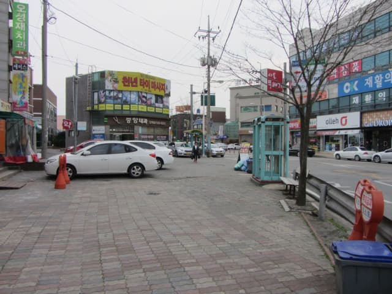
經過一間小吃店, 都是吃三明治之類的食物, 晚餐沒理由吃這些吧!
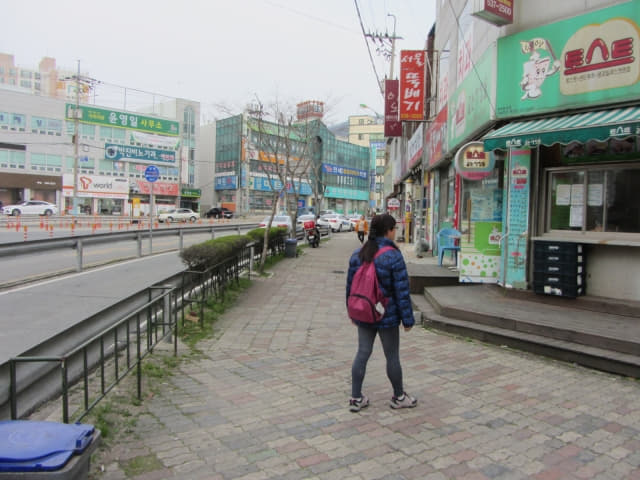
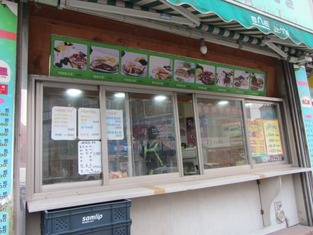
很快便來到海南綜合巴士客運站, 出口前有一條長長的計程車龍。可能海南的公共交通並不發達, 班次疏落, 計程車成為主要交通工具。
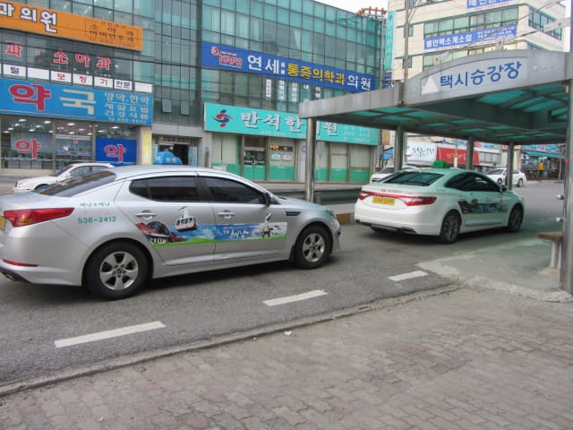
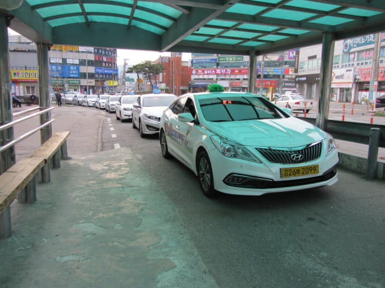
計程車站旁豎立了一幅巨型地圖, 還標明往各主要目的地的距離, 讓乘客乘搭前知道大約的車資。
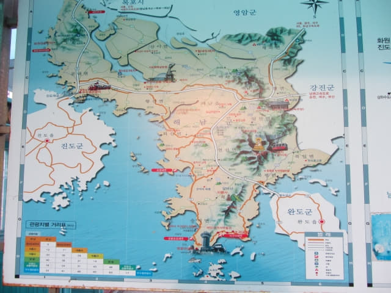
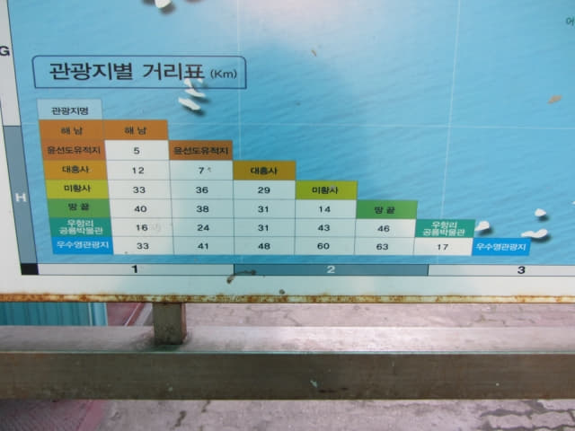
海南綜合巴士客運站附近街道比想像的冷清, 只有幾間店舖, 沒有餐廳。沒辦法, 唯有走到馬路對面碰碰運氣。
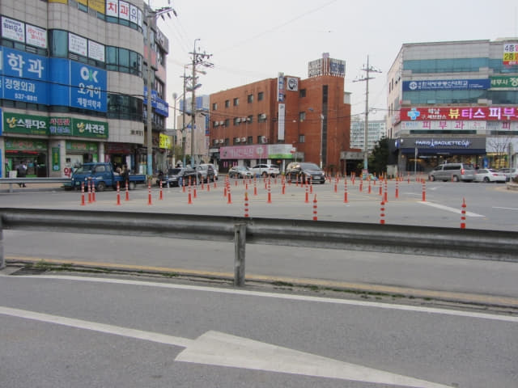
海南「콩나루」餐廳簡單晚餐
海南綜合巴士客運站對面也沒有餐廳, 便掉頭沿馬路朝返回酒店的方向一直走, 又經過那間黑色旅館, 再向前走一會, 終於看見一間名為「콩나루」的大眾化餐廳, 從裝修來看, 價錢肯定不會貴, 正合我們的心意, 便毫不考慮在這裡吃晚飯。
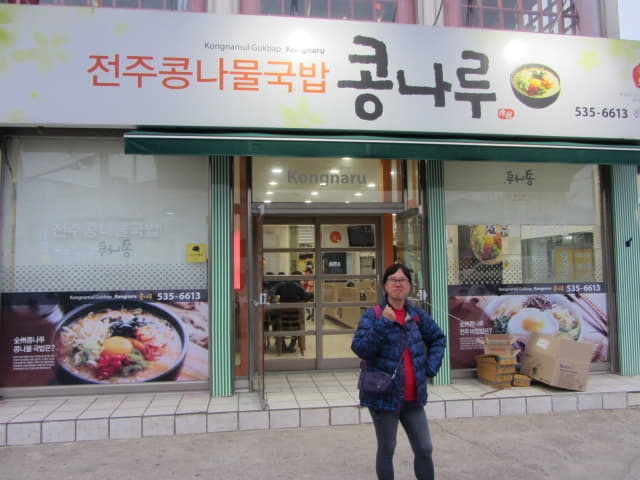
我們點了門前左右張貼的兩張巨型招牌餐。
其實不知餐的正確名稱, 就叫這個「泡菜湯飯」, 每客是6,000韓元。
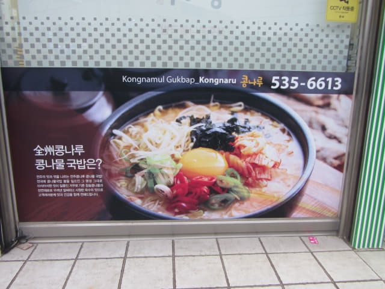
和這個「野菜撈飯」, 每客是7,000韓元。
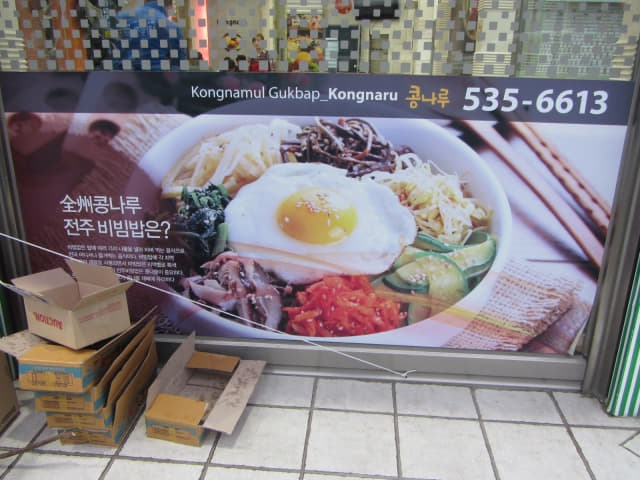
等了一會, 食物陸續送上, 雖然沒有什麼特別, 但味道不錯, 吃得飽飽的。有一點值得讚的, 就是除了配菜可以加添外, 用盒子裝著的紫菜也可以加添的。
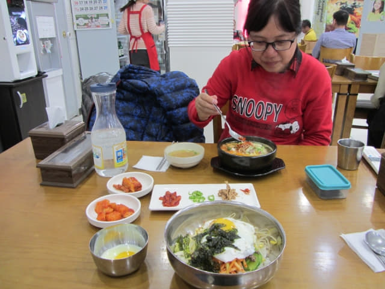
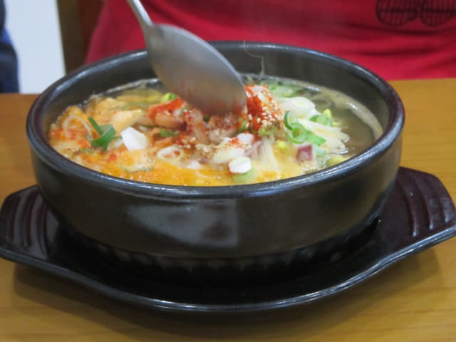
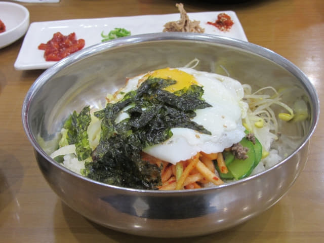
吃完晚餐, 往馬路對面的一間超級市場買了明天的早餐 — 一個蛋糕和兩個碗麵, 其中一個碗麵是我今晚的夜宵, 總共是3,600韓元, 但碗麵竟然又忘記取筷子! 所以, 如果酒店是連自助早餐的, 扣除早餐的價錢, 房租可能比很多不包早餐的廉價酒店還便宜。
接著步行幾分鐘便返回酒店房間, 寫了今天的日記, 吃了一個碗麵, 很久沒有吃碗麵了, 十分好味, 我平時是不吃這類碗麵的, 主要是沒益的食物, 而且很容易拉肚子的, 但旅行難免要放縱一下, 這才是像旅行吧!
休息了一會, 接著當然是享受舒適無比的水療按摩浴, 水柱帶著氣泡從浴缸四周噴射而出, 有如萬馬奔騰, 不斷按摩肌肉, 所有疲勞都漸漸消失, 真是十分舒服, 慨嘆人生幾何, 為今天的行程劃上難忘及完滿的句號。